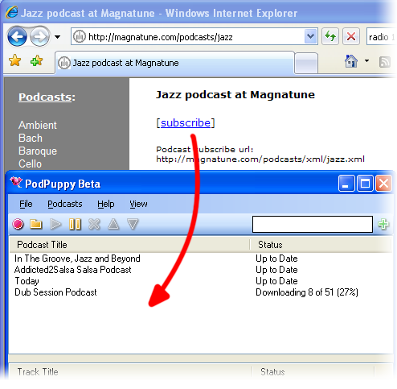
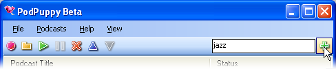

User Guide
- Getting Started
- The Toolbar
- Options
- Tag Tokens
- Reporting Bugs
- Getting Help
Getting Started
Set Your Podcasts Folder
Your Podcasts Folder is the folder that all your podcasts will be downloaded to. Within the podcasts folder one folder will be created for each podcast. By default your podcasts folder is your My Music folder. To change your Podcasts Folder..
- Click File->Options to open the Options Dialog.
- Select the Downloads Tab.
- Click the folder icon on the line labelled Podcasts Folder and browse to select you preferred folder.
- On the Options Dialog click OK to apply the change.
Subscribing to a Podcast
PodPuppy is all about subscribing to Podcasts. There are two ways to do this..
If you know the URL of the Podcast you want to subscribe to, just type or paste the URL into the Search or Subscribe Box

You can also subscribe to a podcast by dragging a link from your web browser. There are lots of websites that contain podcasts. Usually there will be a link labelled subscribe, rss or atom. Wherever you find a link like that you can drag it from the web browser to the podcasts list view in PodPuppy to subscribe.
Importing Subscriptions
PodPuppy can import a list of subscriptions from an OPML file. Select File->Import Subscriptions from the main menu and point to an OPML file.
Searching for Podcasts
To search Google for podcasts related to some keywords just type the keywords into the Search or Subscribe Box and click the Search or Subscribe Button. This will bring up your web browser with the results. You can drag the links directly from your web browser to PodPuppy to subscribe.

The Toolbar
The Toolbar Controls

Check Podcasts Button
PodPuppy will automatically check podcasts for new items on a regular basis, but if you don't want to wait for the next automatic check you can click the Check Podcasts Button to check podcasts for new items immediately.
Open Podcasts Folder Button
Click the Open Podcasts Folder Button to open your podcasts folder in windows explorer so you can browse and play your downloaded tracks.
Resume Downloads Button
When downloads are paused you can click the Resume Downloads Button to start downloading again.
Pause Downloads Button
Click the Pause Downloads Button to temporarily stop all downloads. This feature is useful when you want to free up bandwidth for a while. When you click the Resume Downloads Button the downloads will resume where they left off.
Unsubscribe From Selected Podcasts Button
When one or more podcasts are selected you can click the Unsubscribe From Selected Podcasts Button to remove them. No more items will be downloaded for the selected podcasts. You will be asked whether you want to keep the items that have already been downloaded.
Raise Podcast Priority Folder
When one podcast is selected you can click the Raise Podcast Priority Folder to increase its priority. The higher priority podcasts will be downloaded first.
Lower Podcast Priority Folder
When one podcast is selected you can click the Raise Podcast Priority Folder to decrease its priority. The lower priority podcasts will be downloaded last.
Search or Subscribe Box
Enter a podcast url into the Search or Subscribe Box to subscribe to it.
Anything you type into the Search or Subscribe Box that doesn't start with http:// will be interpreted as keywords for a search. PodPuppy will search google for podcasts related to the keywords. Your web browser will be opened to display the results.
Options
Opening the Options Dialog
To open the options dialog click File->Options on the main menu.
The Downloads Tab
Check Feeds Every X Minutes
This setting controls how often PodPuppy will automatically check the subscribed podcasts for new items. Enter 0 to turn off automatic checking.
Maximum Simultaneous Downloads
Enter a number between 1 and 20 to set the maximum number of simultaneous downloads.
Maximum Total Download Speed
Use this setting to limit the amount of bandwidth that PodPuppy uses when downloading podcasts.
Temporary Download Folder
This setting controls the folder where partially downloaded tracks are stored. Once each track is fully downloaded it is copied to the Podcasts folder.
Podcasts Folder
The Podcasts Folder is the folder that all your podcasts will be downloaded to. Within the podcasts folder one folder will be created for each podcast. By default the podcasts folder is your My Music folder.
The Balloons Tab
Popup a Balloon When Download Completes
Tick this box if you want PodPuppy to notify you each time a new track is downloaded with a popup balloon on the notification icon.
Click the Balloon To
When PodPuppy pops up a balloon to tell you that a track has been downloaded you can click on the balloon. The settings here allow you to choose what happens when you click on the balloon. Either your media player will be opened to play the track or windows explorer will be open the folder where the new track is located.
The Scheduler Tab
The scheduler allows you to program PodPuppy to pause and resume downloads at set times of the day or week. This is useful if you want PodPuppy to download at night or during working hours so that it doesn't use up bandwidth when you're using the computer.
Enable Scheduler
Tick this box to turn the scheduler on and enable the schedule editing control.
The Scheduler
Each cell in the grid represents an hour on a day of the week. Click in the cell to toggle whether PodPuppy will pause downloads during that hour.
The Syncroniser Tab
The Syncroniser helps you keep the podcasts on your portable media player up to date by allowing you to create a copy of your PodPuppy Podcasts folder on another drive with a single click, or even automatically.
Syncronised Folder
Set this to a folder on your portable media player or removable drive. This will be the portable copy of your Podcasts Folder.
Auto-Sync
You can syncronise at any time by selecting File->Syncronise from the main menu, but you can also have PodPuppy automatically syncronise each time the portable drive or media player is connected, just tick this box.
Synced File Types
Use this setting to control the types of files that will be copied to your portable device by the syncroniser. This should be a space separated list of file extensions. It makes sense to include only the types of media that your device can play.
The Tagging Tab
PodPuppy can tag downloaded files with metadata, setting the album and or genre to make them easier to find on some media players. Note: this will only affect MP3 files.
Set Album to Podcast Title
When ticked PodPuppy will set the album of all downloaded tracks to the title of the podcast they are part of.
Set Genre to 'Podcast'
If this box is ticked PodPuppy will set the genre of all downloaded tracks to 'Podcast'.
The Dynamic OPML Tab
There are a number of online feed aggregation services (such as www.podnova.net) that allow you to build and maintain a personal list of podcast subscriptions. Your subscription list is then available online as an OPML file. PodPuppy can tie in with these services to allow you to remotely control your PodPuppy subscriptions.
You can use the dynamic OPML options tab to point PodPuppy at your online subscriptions list and it will make and remove subscriptions as neccesary to stay up to date with the online version.
You can have both dynamic and ordinary subscriptions at the same time.
Dynamic OPML Source
Set this to the URL of an OPML file that represents your subscriptions list.
When Subscribing Just Get the Latest Item
If this box is ticked, when PodPuppy adds new subscriptions that it finds in the dynamic OPML it will only get the latest item, rather than all the items in the podcast.
When Unsubscribing Delete Downloaded Items
If this box is ticked, when PodPuppy removes dynamic subscriptions that are no longer in the dynamic OPML it will also delete any downloaded items belonging to them.
The Misc. Tab
Launch PodPuppy When Windows Starts
Tick this box to have PodPuppy start automatically each time you turn your computer on.
Start Minimized
If this box is ticked PodPuppy will always start minimized to the task bar.
Show in Taskbar When Minimized
By default PodPuppy does not show in the taskbar when minimized so as to save space, but you can change that behaviour by ticking this box.
Include File Type In Search
When you use the Search Box on the toolbar, podpuppy searches google for podcasts related to your keywords. With this box ticked the google query also specifies that the results must only include .xml and .rss files. The benefit of this is that you can usually drag links straight from the google results page to podpuppy to subscribe, however you may get fewer or less relevant results.
Check For New Version At Startup
If this box is ticked, PodPuppy will check to see if there is a newer version of the software each time it starts. If a newer version is found you will be asked whether you want to view the PodPuppy website downloads page.
Reporting Bugs
If you find a bug in PodPuppy, please submit a bug report. To do this select Help->Report a Bug from the main menu.
Getting Help
If you are having trouble with PodPuppy and can't find an answer here then you can always ask a question on the Github project.